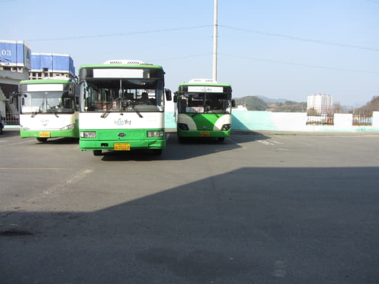

循寶城大韓茶園．第二茶園中間筆直的小路離開, 沿途風景非常漂亮, 不時停下來拍照, 留下很多美好回憶, 離開前再回頭望望, 真是很美! 這段路的風景太吸引, 逗留的時間比估計的多出很多, 望望手錶, 時間差不多下午三時半, 離估計巴士到站的時間只餘下二十分鐘, 時間又轉為緊迫, 幸好巴士到站的時間只是粗略估計, 應該沒有那麼早來的!

離開寶城大韓茶園．第二茶園, 沿茶園前的樹林間的步道一直走。接著經過一個村莊, 不時傳來狗吠聲, 有些怕怕, 恐怕隨時有惡犬從路旁撲出來。
穿過村莊, 迎面是田地和一個一個涼亭。
再向前走一會, 黃澄澄的油菜花田就在前面, 我們剛才便是從那裡進入寶城大韓茶園．第二茶園的, 接著循原路便可以到達「삼장」巴士站。
沿馬路一直走。

於下午三時四十五分來到「삼장」巴士站, 我們便是從這裡乘巴士返回寶城長途汽車客運站。
推算巴士到達「삼장」巴士站時間
這是我們的估計: 巴士下午 15:40從寶城長途汽車客運站開去, 因早上的巴士十分鐘已經抵達寶城大韓茶園, 根據這資料, 所以推算巴士約二十分鐘便來到「삼장」巴士站, 即是大約下午四時。
幾乎又錯過了巴士 驚險地乘巴士往寶城長途汽車客運站
其實這時已經知道, 巴士是在對面行車線從右駛來的, 已經懷疑是否在對面等候。但看見巴士站亭在另一邊, 心想巴士車長如果看見乘客揮手, 便會停下來, 乘客便走過馬路上車! 這想法……. 錯啦!!!!! 如果來寶城大韓茶園．第二茶園遊覽的朋友, 記得站在巴士站亭馬路對面等候! 也是下面相片中我站在的地方。再說一次:「一定要在巴士站亭馬路對面等候!!!!!」再多說一次: 「千萬不要在巴士站亭等候, 一定要在巴士站馬路對面等候!!!!!」
看見巴士還未駛來, 便站在巴士站旁看田園風光。
一位老人家正在採摘河兩岸的植物, 十分翠綠肥大, 看清楚, 好像是我們在餐廳經常吃到的前菜。自然生長的植物, 肯定是有機和健康啦!
巴士比估計的遲來, 約下午四時十二分, 一輛巴士從右邊不遠處的彎角「掟」出來, 已感覺到巴士速度很快, 我們立即揮手示意上車, 但車速明顯沒有減慢下來, 只見巴士車長轉頭望望我們, 沒有將車停下來, 呼一聲繼續向前駛去, 肯定他以為我們和他打招呼啦! 不得了啦! 只得這一班巴士, 當時幾乎發狂, 唯有一邊放盡喉嚨大聲喊、一邊揮手在馬路中狂奔追著巴士, 不知是車上乘客看見, 還是車長看見我們, 巴士終於在前面差不多六十尺前才停下來! 差點兒流落鄉間, 也幸好當時馬路沒有其他汽車, 否則真是非常危險。
氣喘喘的登上了巴士, 巴士車長向我們嘰哩咕嚕的不知說什麼, 估計都是罵: 「你們應該站在路邊等車, 否則不知道你們是想搭車的! 」除了「Cum Sa Mi Da…..!」還可以說什麼! 巴士車長看見我們是外地遊客, 也笑笑口回應。
付了車資, 也忘記付了多少車資, 便往車廂靠近後排的座位坐下來。休息片刻, 心跳才稍為沒有先前那麼急速。
巴士車長的駕駛技術只可用「勇和狠」來形容, 有如跑馬, 這時才明白我們錯過早上11:55班次巴士的原因, 以這樣的速度, 估計不用七分鐘便可抵達寶城大韓茶園! 巴士在我們返回寶城大韓茶園巴士站前的五分鐘早已離去!
寶城長途汽車客運站 (보성 버스터미널)
巴士約下午四時半便抵達終點站 — 寶城長途汽車客運站, 正式結束了寶城大韓茶園和寶城大韓茶園．第二茶園這行程。接著是轉乘高速巴士返回順天, 而順天的行程也來到尾聲了。


{kind=link}